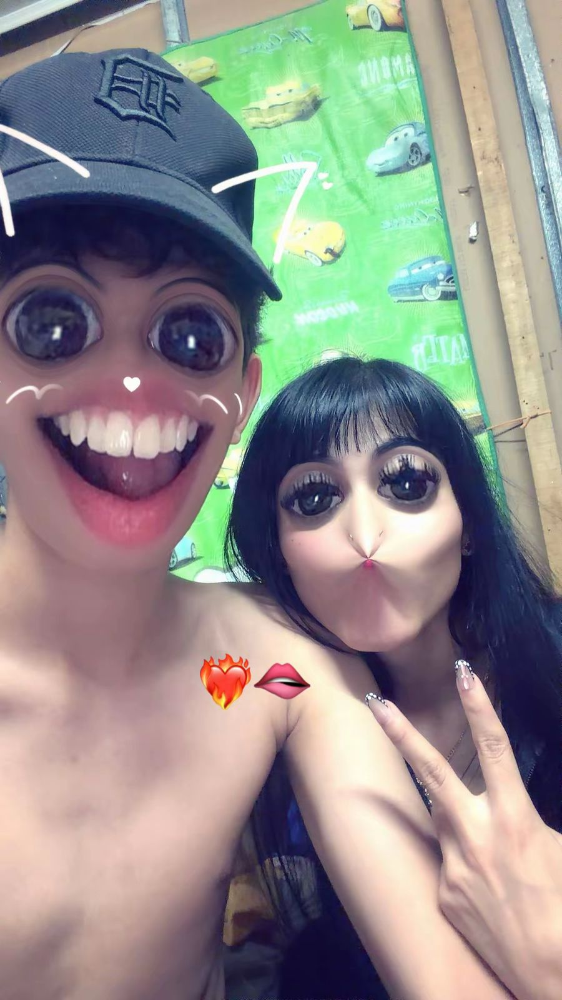
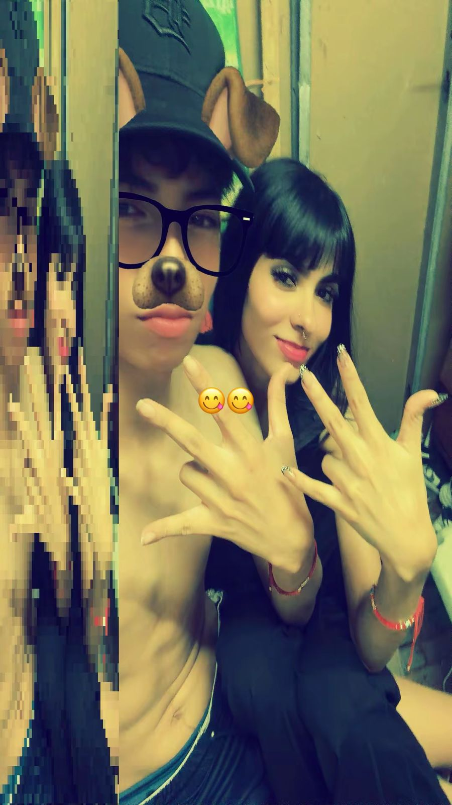
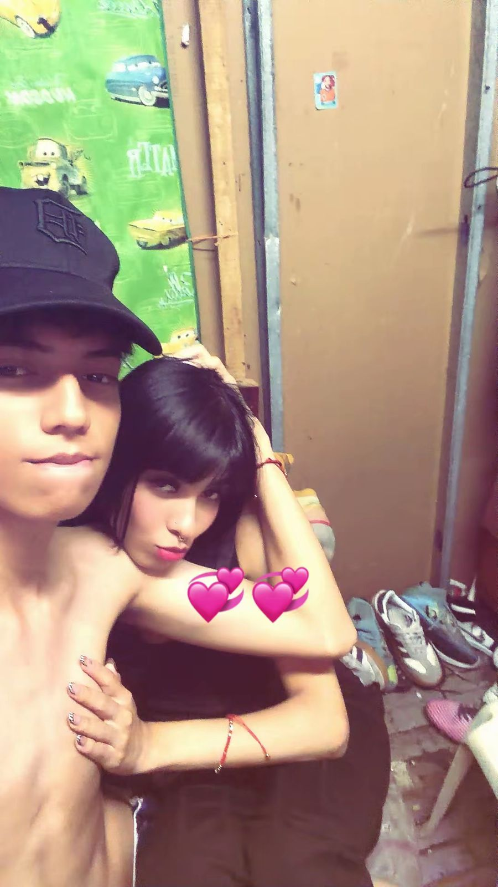
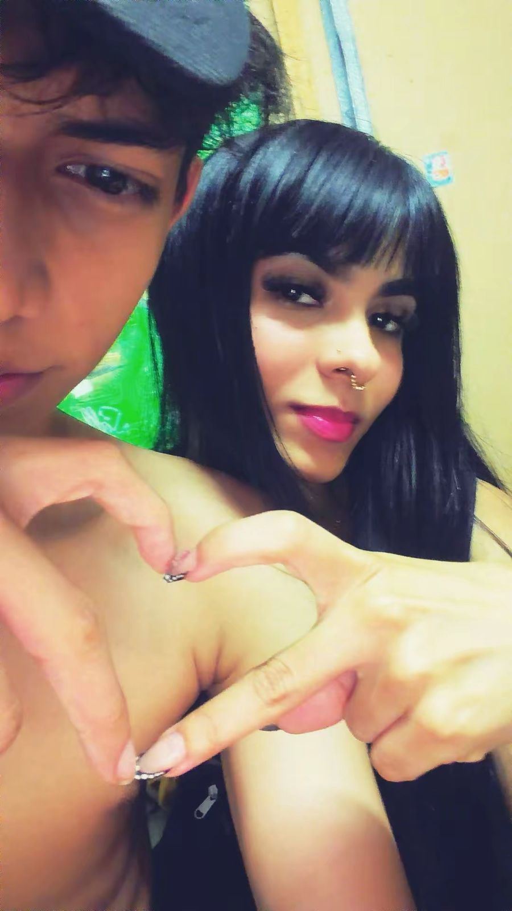

Mi estrellita ✨
Esta página es para recordar nuestra historia, nuestros momentos y todas esas pequeñas cosas que hacen que seas tan especial para mí.
Sobre ti 🎀
Eres una persona muy especial para mí. Eres extrovertida, divertida, inteligente y tienes una personalidad que hace que nunca haya un momento aburrido contigo.
Te encanta Hello Kitty, el rosa y el negro, el helado de vainilla, las lentejas, Fuerza Regida y Fuerza Regida.
Tus pequeñas cosas favoritas 🎀
Hello Kitty
Porque Hello Kitty tenía que estar aquí sí o sí. 😂
Colores
Rosa y negro.
Helado
Tu favorito: vainilla.
Comida
Lentejas.
Música
Fuerza Regida.
Equipo
el que yo apoye
Nuestros apodos 💞
Mi taki · Taki · Ratoncita · Mi estrellita · Mi bebé · Mi princesa
Nuestra historia 📖
Todo comenzó de una manera que ninguno de los dos esperaba.
Nos conocimos gracias a tu hermano, que además es mi compañero y uno de mis mejores amigos. Un día estábamos en llamada y tú apareciste hablando desde su teléfono.
Desde ese momento me pareciste una persona interesante y quise conocerte más.
Después empezamos a hablar y poco a poco fuimos conociéndonos mejor.
Con el tiempo comenzaron a aparecer sentimientos y finalmente llegó el momento que cambió nuestra historia.
El día que comenzó todo 💞
23 de mayo de 2026 — 7:23 p. m.
Esa fue la noche en la que comenzamos oficialmente nuestra historia.
Una noche que quiero recordar para siempre.
Nuestra historia 📖💞
El comienzo
Todo comenzó de una manera que ninguno de los dos probablemente imaginaba. Estaba en llamada con tu hermano, mi compañero y uno de mis mejores amigos, cuando tú apareciste en la llamada y empezamos a hablar.
El número
Me pareciste una persona muy interesante y terminé haciendo un intercambio bastante curioso: un cuaderno por tu número. Y encima me llevé unos cuernos de regalo. 😂
Nuestro lugar 🌙💞
Ese lugar que solo es nuestro
Hay lugares que para cualquiera pueden ser simplemente un lugar, pero para nosotros significan mucho más.
Ese mirador se convirtió en uno de nuestros lugares especiales. De noche, con las luces a lo lejos y la luna iluminándolo todo, hay algo que hace que cada momento ahí se sienta diferente.
Y de todas las cosas que puedo recordar de ese lugar, hay una que siempre voy a guardar: la forma en que la luz de la luna se refleja en tus ojos.
“Nuestro pequeño lugar en el mundo.” 💞
Recuerdos que guardo contigo 📸💞

Un momento especial 💗
Uno de esos pequeños momentos que quiero guardar siempre.

Otro recuerdo 🌸
Porque hasta las cosas sencillas terminan convirtiéndose en recuerdos bonitos.

Un recuerdo más ✨
Un pedacito de nuestra historia guardado en una foto.

Y este también 💞
Porque cada recuerdo contigo tiene su propio lugar.
Empezamos a conocernos
Poco a poco empezamos a hablar y a conocernos mejor. Sin darnos cuenta, nuestras conversaciones fueron creando algo especial entre nosotros.
La noche que cambió todo
El 23 de marzo de 2026, a las 7:23 de la noche, llegó el momento que marcó nuestra historia. Te pregunté si querías ser mi novia y dijiste que sí. 💞
Y desde entonces...
Desde ese momento comenzamos a construir nuestros propios recuerdos, nuestras bromas, nuestros lugares especiales y una historia que todavía seguimos escribiendo.
Momentos especiales 🌙
Hemos compartido momentos que para mí significan muchísimo y que hicieron que nuestra relación se volviera cada vez más especial.
También tenemos nuestro lugar especial: ese mirador donde por la noche podemos ver las luces a lo lejos y la luna ilumina todo.
Es uno de esos lugares que simplemente se sienten diferentes cuando estoy contigo.
Cosas que amo de ti 💞
Tus ojos.
Tu pelo.
Tu inteligencia.
Tu sentido del humor.
Lo extrovertida que eres.
La manera en que me haces reír.
Cómo estás conmigo cuando estoy triste.
Todas nuestras bromas.
La forma en que eres tú misma.
Tu cumpleaños 🎂
Naciste el 26 de abril de 2008.
Nuestro tiempo juntos ⏳💞
Nuestra historia comenzó el 23 de mayo de 2026 a las 7:23 p. m.
Falta para nuestro primer año 🎀
Una promesa 💞
Llegaste en uno de los momentos más difíciles de mi vida y te convertiste en una persona que me dio cariño, compañía y razones para seguir mirando hacia adelante.
Para mí eres una señal hermosa de que aquella promesa que hice con Dios todavía sigue viva.
Eres uno de los milagros más bonitos que me ha regalado la vida.
Para mi Taki 💞
Si llegaste hasta aquí, quiero que sepas que hice esta página pensando en ti y en todos los momentos que hemos vivido juntos.
Desde aquella primera llamada hasta cada conversación, cada broma y cada momento que hemos compartido, poco a poco te convertiste en alguien demasiado importante para mí.
Me encanta tu forma de ser, tu manera de hacerme reír, tu inteligencia, tu personalidad y esa forma tan tuya de estar conmigo cuando más lo necesito.
También amo todos esos pequeños detalles que hacen que seas tú: tus bromas, nuestras locuras, nuestros apodos y ese lugar especial que tenemos donde la luna se refleja en tus ojos.
Te amo más que ayer y menos que mañana. 💞
Gabo 🎀
Para mi princesa 💞
Te amo más que ayer y menos que mañana.
Gracias por formar parte de mi vida, por todos nuestros momentos y por cada recuerdo que hemos creado juntos.